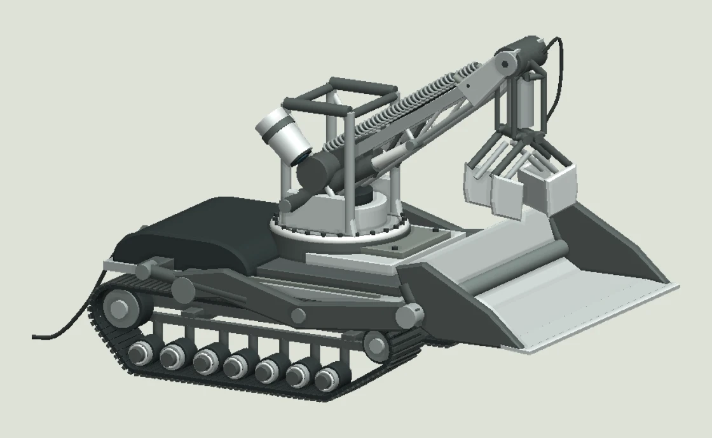

ЧЕРНОБЫЛЬСКАЯ АЭС · 1987
Мобот-Ч-ХВ-2
Модернизированная машина со сменным оснащением.
Исследовательская реконструкция по архиву СКТБ ПР.

СКТБ ПРИКЛАДНОЙ РОБОТОТЕХНИКИ
Архивная фотосверка


Перед отправкой на ЧАЭС
На снимке №2 видны семь нижних дисков ходовой, очертание кожуха и взаимное положение стрелы, схвата и ковша.
Наложение служит для визуального сравнения. Перспектива и масштаб камеры не откалиброваны.
Первичный источник ↗
АРХИВ · ДОПОЛНИТЕЛЬНЫЕ РАКУРСЫ
Снимки из публикации конструкторов
Репродукции исторических фотографий из статьи А. Ф. Батанова и В. Лосицкого. Класс B — видимая форма, не заводская метрология. На снимке №6 показаны два разных экземпляра: их оборудование нельзя объединять в одну «достоверную» сборку.
Архив · v21 · v22
Откройте наложение для сравнения одной детали при одинаковой регистрации камеры.


ИССЛЕДОВАТЕЛЬСКАЯ ВЕРСИЯ 22
Паспорт достоверности
Документ
Сменный схват и два места установки молотка описаны разработчиком.
Фотография
Катки видимого борта, оболочка кожуха, наружные элементы стрелы и рабочие органы различимы на снимках.
Гипотеза
Размеры, скрытые крепления, углы и кинематика условны. Материал траков Ч-ХВ-2 (1987) не установлен; полиуретан описан для исходной машины 1986 года. Внутреннее устройство кабелеукладчика и место дозиметра остаются открытыми.